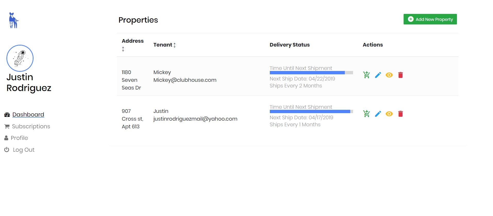

For my semester-long project in my software engineering class, I worked on building a rental home management system for independent landlords. This is a project that I had been wanting to work on for a long time, and I was really excited that this class gave me the time and resources to work on this project. I know some people who invest in real estate, and came to understand that there are certain risks with owning, and maintaining rental homes. One of the worst things that can happen is the air conditioner of a home breaks. If the AC breaks, it is usually up to the landlord to fix it in a timely manner. Fixing a house's AC is extremely time consuming and costly. It can cost home owners up to their entire profit for the entire year from that house's rent revenue. This costly event can be prevented by simply changing the air filters in the house regularly. The goal for this project was to develop a way for landlords to track the status of each of their homes' air filters, and to automize the delivery of new air filters to all of their homes.
I work on a team of five. We work in the Agile framework, and I act as the project owner which means I am in charge of corresponding with our test users, and gathering data. For development, most of my contributions are on the front end. Our project is built in Ruby on Rails. For the automatic orders, we are utilizing the Paypal API. There is an admin account that keeps tracks of the orders coming in. The business plan is to team up with a white label air filter manufacturer that would be able to fulfill the orders on our site. We have completed a version of Okapi Home Management for the class, and we are now looking towards building the business in the future.
Link to Website